library(tidyverse)
# FactoMineR for PCA computation and factoextra for pretty plots
library(FactoMineR)
library(factoextra)
library(ggpubr)
# if (!require("BiocManager", quietly = TRUE))
# install.packages("BiocManager")
# BiocManager::install("DESeq2")
library(DESeq2)Presentation 3 - EDA - Multivariate Analysis
In this section, we’ll move past basic summary stats and simple bivariate plots to uncover more complex relationships in our data.
We’ll use PCA (Principal Component Analysis) — a popular dimensionality reduction method — to reveal hidden structure and highlight the most informative patterns. in the data.
Our focus is to assess whether the collagen (COL) gene family plays a role in ovarian cancer, and whether cell type proportions (tumor, stromal, or normal) influence collagen expression.
We also want to examine whether patient characteristics, such as tumor stage, correlate with gene expression patterns.
Load packages and the data
Let’s get started by loading the necessary libraries and the cleaned dataset we explored in previous sections:
# Load the pre-saved RData file
load("../data/Ovarian_comb_prep_Col.RData")
# Subset the data we will use and drop NA values
df_comb <- df_comb %>%
select(
where(is.integer) |
where(is.factor) |
where(is.numeric)
) %>%
drop_na(where(is.integer))Normality and Data Transformation
Before running PCA or other multivariate analyses, it’s important to check if our variables are roughly normally distributed, since many methods assume or work best with normal data.
One simple way to do this is with a QQ (Quantile-Quantile) plots, which visually compares the distribution of our data to a normal distribution.
Checking for Normality: QQ Plot
Let’s check the normality of all integer variables at once by reshaping the data and plotting QQ plots for each.
# Pivot integer columns to long format for easy faceting
df_long <- df_comb %>%
pivot_longer(where(is.integer),
names_to = "variable",
values_to = "value")
# QQ plots faceted by variable
ggplot(df_long, aes(sample = value)) +
geom_qq_line(color = "red") +
geom_qq(color = "#482878FF", alpha = 0.7) +
labs(title = "QQ Plot for Gene Expression",
x = "Theoretical Quantiles", y = "Sample Quantiles") +
theme_minimal() +
facet_wrap(vars(variable), nrow = 2, scales = "free")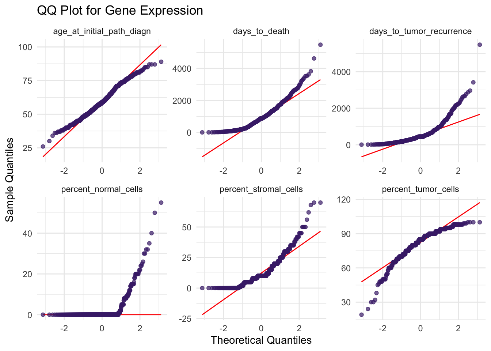
If the points fall along the diagonal line, the data is approximately normal.
If the points curve above the line, the data is right-skewed.
If the points fall below the line, the data is left-skewed.
This quick check shows whether a transformation is needed to improve symmetry and model accuracy.
In this case, we can see that Age is approximately normally distributed, while percent tumor cells and percent normal cells are not. This is very common — many variables, especially in biological or economic data, naturally tend to be skewed rather than perfectly normal.
Transformations to Reduce Skewness
Depending on your data and goals, it’s often necessary to scale or transform variables for meaningful analysis. If normality is an issue, transformations like a log or square root can help make distributions more symmetric and stabilize variance.
Let’s apply a transformation to our data now to help reduce skewness and get our variables closer to normal.
df_raw <- df_comb %>%
select(where(is.integer))
df_scaled <- df_raw %>%
select(where(is.integer)) %>%
mutate(
#days_to_death = log2(days_to_death + 1),
days_to_death = sqrt(days_to_death),
days_to_tumor_recurrence = log2(days_to_tumor_recurrence + 1),
percent_stromal_cells = log2(percent_stromal_cells + 1),
#percent_not_cancer_cells = log2(percent_not_cancer_cells + 1),
percent_normal_cells = log2(percent_normal_cells + 1),
percent_tumor_cells = percent_tumor_cells^3) Histogram Before and After Transformation
Lets take a look!
p1 <- df_long %>%
filter(variable %in% c("days_to_death", "percent_normal_cells", "percent_tumor_cells")) %>%
ggplot(aes(x = value)) +
geom_histogram(bins = 30, fill = "#482878FF", color = "black") +
theme_minimal() +
facet_wrap(vars(variable), nrow = 1, scales = "free") +
labs(title = "Before")
df_long <- df_scaled %>%
pivot_longer(cols = everything(), names_to = "variable", values_to = "value")
p2 <- df_long %>%
filter(variable %in% c("days_to_death", "percent_normal_cells", "percent_tumor_cells")) %>%
ggplot(aes(x = value)) +
geom_histogram(bins = 30, fill = "#2A788EFF", color = "black") +
theme_minimal() +
facet_wrap(vars(variable), nrow = 1, scales = "free") +
labs(title = "After")
ggarrange(p1, p2, nrow = 2, ncol = 1)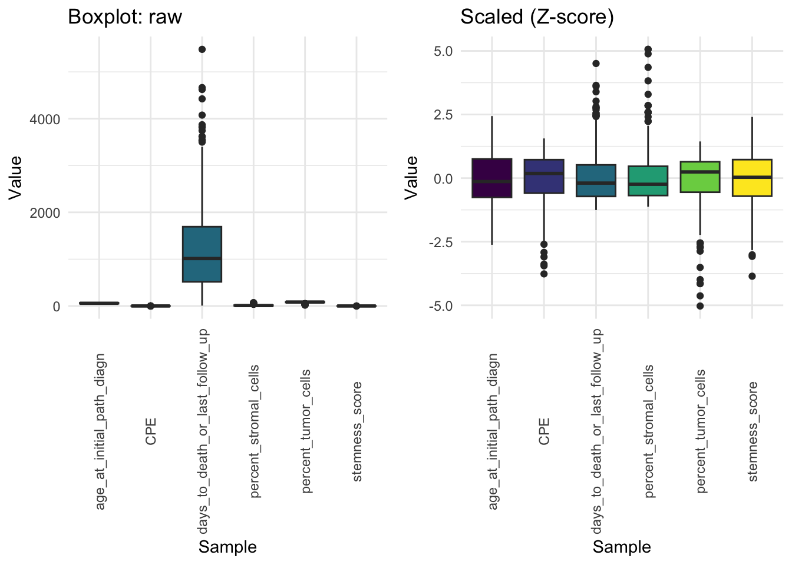
Summary
Always check for normality before choosing a transformation.
Right-skewed data can benefit from log or sqrt transformations.
Left-skewed data may benefit from squaring.
QQ plots, histograms are excellent tools to assess transformation effectiveness.
Applying Z-Score Scaling
Z-score standardization is essential when variables have different units or ranges
p1 <- df_comb %>%
select(where(is.integer)) %>%
drop_na() %>%
pivot_longer(everything(), names_to = "Sample", values_to = "Value") %>%
ggplot(aes(x = Sample, y = Value, fill = Sample)) +
geom_boxplot() +
theme_minimal() +
labs(title = "Boxplot: raw") +
theme(legend.position = "none",
axis.text.x = element_text(angle = 90, vjust = 0.5)) +
scale_fill_viridis_d()
p2 <- as.tibble(scale(df_comb %>%
select(where(is.integer)) %>%
drop_na())) %>%
pivot_longer(everything(), names_to = "Sample", values_to = "Value") %>%
ggplot(aes(x = Sample, y = Value, fill = Sample)) +
geom_boxplot() +
theme_minimal() +
labs(title = "Scaled (Z-score)") +
theme(legend.position="none",
axis.text.x = element_text(angle = 90, vjust = 0.5)) +
scale_fill_viridis_d()
ggarrange(p1, p2, nrow = 1)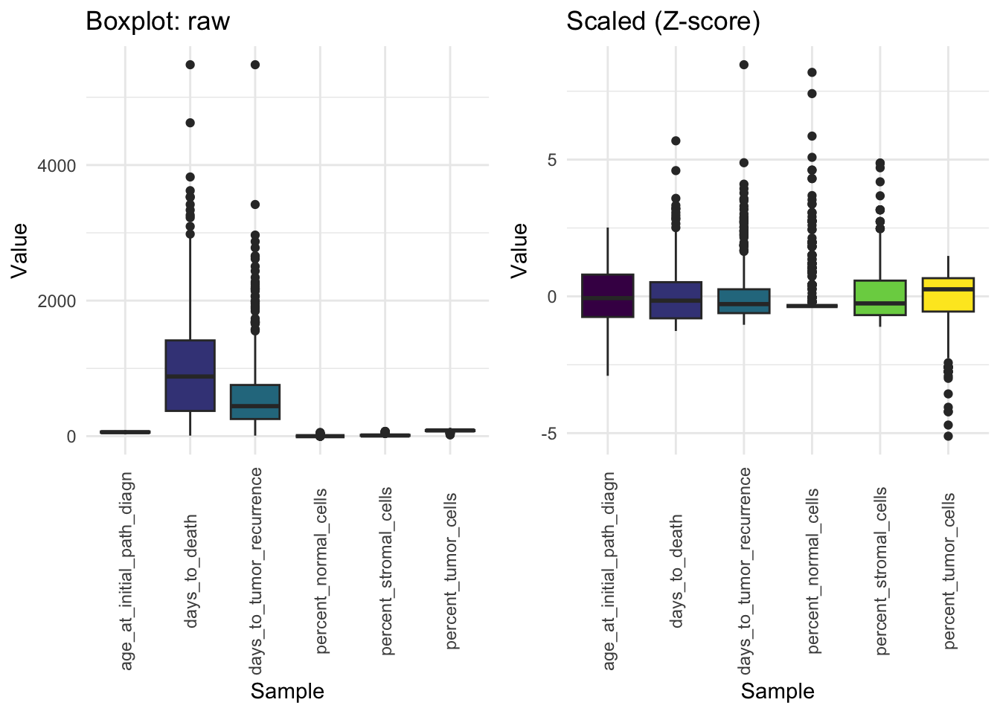
Principal Component Analysis (PCA)
There are many frameworks for performing PCA in R. Here, we’ll use the FactoMineR and factoextra packages to compute and visualize PCA results.
Since PCA is sensitive to scale and variance, it’s important to use the cleaned and transformed data we prepared earlier.
Let’s run PCA on the integer variables:
group_var <- df_comb %>%
select(where(is.factor))
# Compute PCA
res.pca_transformed <- PCA(df_scaled, graph = FALSE, scale.unit = TRUE)Eigenvalues and Variance Explained
Next, we’ll check how much variance each principal component explains and visualize the results!
fviz_screeplot(res.pca_transformed, addlabels = TRUE, ylim = c(0, 50))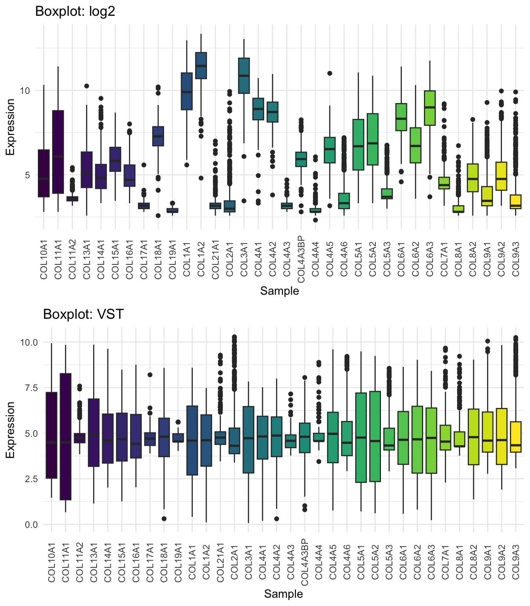
The scree plot shows the percentage of total variance explained by each principal component. This helps decide how many components to keep.
Variable-Level Results
We can extract variable-level results with:
var <- get_pca_var(res.pca_transformed)This gives us:
var$coord: Coordinates (i.e., how variables align with PCs)var$cos2: Quality of representationvar$contrib: Contribution to each principal component
Visualize variable relationships: this plot shows how strongly each variable contributes to the PCs. Variables closer to the circle’s edge are well represented and more influential.
# Color by cos2 values: quality on the factor map
fviz_pca_var(res.pca_transformed,
col.var = "cos2",
gradient.cols = c("#00AFBB", "#E7B800", "#FC4E07"),
repel = TRUE) # Avoid text overlapping)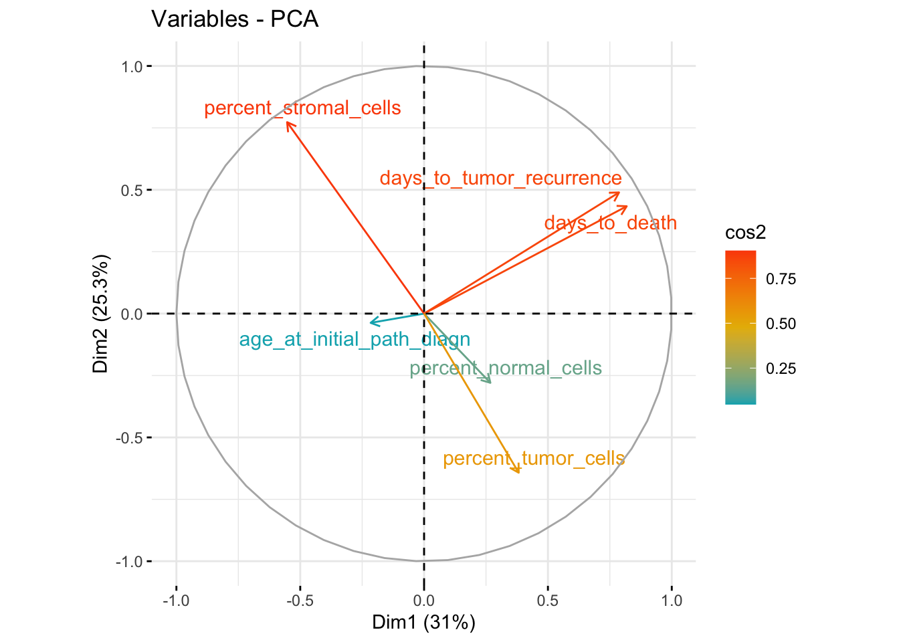
Check which variables contribute the most to PC1 and PC2 individually.
p1 <- fviz_cos2(res.pca_transformed, choice = "var", axes = 1, top=10)
p2 <- fviz_cos2(res.pca_transformed, choice = "var", axes = 2, top=10)
ggarrange(p1, p2, nrow = 1, ncol = 2)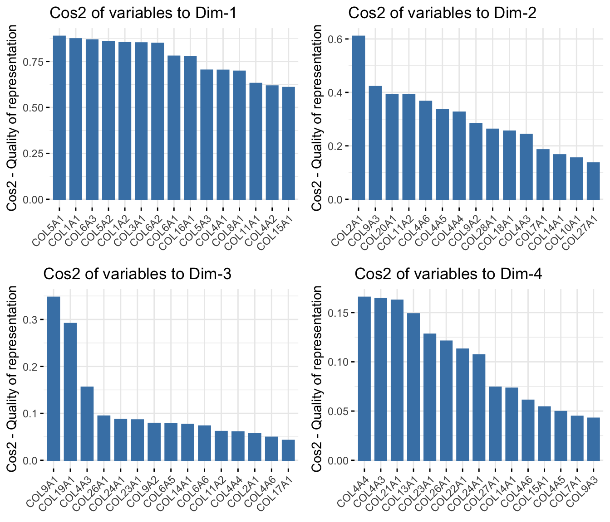
Individual-Level Results
Beyond looking at variables, PCA also provides insights at the individual level (i.e., each sample or patient). You can access their coordinates, cos2 values, and contributions.
# Extract individual results
ind <- get_pca_ind(res.pca_transformed)To see which individuals contribute most to the main axes, plot their contributions. (same as for variables):
# Quality of representation (cos²) for individuals
p1 <- fviz_cos2(res.pca_transformed, choice = "ind", axes = 1, top = 20)
p2 <- fviz_cos2(res.pca_transformed, choice = "ind", axes = 2, top = 20)
#p3 <- fviz_cos2(res.pca_transformed, choice = "ind", axes = 1:4, top = 20)
ggarrange(p1, p2, nrow = 1, ncol = 2)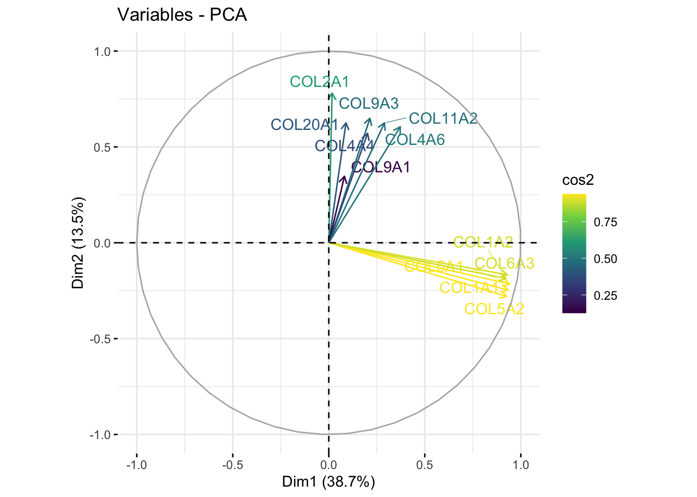
You can also color individuals by important integer variables to explore patterns.
For example, color points by age, stromal cells, normal cells, or tumor cells:
t1 <- fviz_pca_ind(res.pca_transformed,
col.ind = df_scaled$age_at_initial_path_diagn,
geom = c("point"), title = "Age") + scale_color_viridis_c()
t2 <- fviz_pca_ind(res.pca_transformed,
col.ind = df_scaled$percent_stromal_cells,
geom = c("point"), title = "Stromal Cells") + scale_color_viridis_c()
t3 <- fviz_pca_ind(res.pca_transformed,
col.ind = df_scaled$percent_normal_cells,
geom = c("point"), title = "Normal Cells") + scale_color_viridis_c()
t4 <- fviz_pca_ind(res.pca_transformed,
col.ind = df_scaled$percent_tumor_cells,
geom = c("point"), title = "Tumor Cells") + scale_color_viridis_c()
ggarrange(t1, t2, t3, t4, ncol = 2, nrow = 2)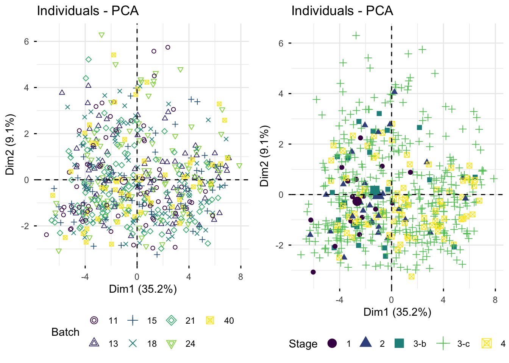
Note that, individuals that are similar are grouped together on the plot.
Coloring by Groups (Factors)
Want to color by groups? Just add a column to your metadata and pass it in:
p1 <- fviz_pca_ind(
res.pca_transformed,
col.ind = group_var$batch,
geom = "point",
legend.title = "Batch") +
scale_color_viridis_d() +
theme(legend.position = "bottom")
p2 <- fviz_pca_ind(
res.pca_transformed,
col.ind = group_var$stage,
geom = "point",
legend.title = "Stage",
pointsize = 2) +
scale_color_viridis_d() +
theme(legend.position = "bottom")
ggarrange(p1, p2, ncol = 2, nrow = 1)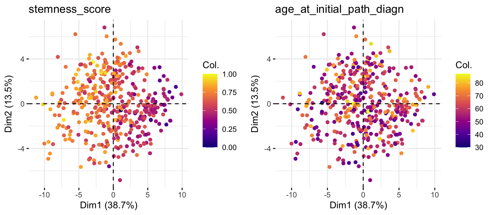
That’s a complete walkthrough of PCA: computing it, exploring results, and visualizing them effectively. PCA is a critical tool for working with high-dimensional data.
Variance Stabilization
Now that we’ve explored data tranformations and PCAs, it’s time to address another important aspect: variance stabilization.
Log or square-root transformations can help reduce variance when larger values have higher variability.
If that’s not enough, try more robust methods like:
rlog()(regularized log transformation)varianceStabilizingTransformation()(VST)
These advanced tools, available in the DESeq2 package, are specifically designed for stabilizing variance in count data.
Example: Apply VST, rlog, and log2 Transformations
Lets examine this using our gene expression data.
Since our expression values are already log2-transformed, we’ll first reverse them back to raw counts. Then, we can test and compare various transformations side-by-side to see how they affect variance and distribution.
# 1. Extract COL genes and convert to counts
df_matrix <- df_comb %>%
select(starts_with('COL')) %>%
mutate(across(everything(), ~ 2^.)) %>%
mutate(across(everything(), as.integer)) %>%
as.matrix()
# 3. Create variance stabilized versions
log2_df <- log2(df_matrix)
rlog_df <- rlog(df_matrix, blind = TRUE)
vst_df <- varianceStabilizingTransformation(df_matrix, blind = TRUE)Comparing Mean-Variance Relationships
Now we visualize how well each transformation stabilizes variance:
# 4. Function for mean-variance plot
plot_mean_var <- function(mat, title) {
df_mv <- tibble(
mean = rowMeans(mat),
variance = apply(mat, 1, var),
rank = rank(rowMeans(mat))
)
ggplot(df_mv, aes(x = rank, y = variance)) +
geom_point(alpha = 0.5, color = "#482878FF") +
theme_minimal() +
labs(title = title, x = "Mean Rank", y = "Variance")
}
mv1 <- plot_mean_var(df_matrix, "Mean-Variance: Raw Counts")
mv2 <- plot_mean_var(log2_df, "Mean-Variance: log2(counts + 1)")
mv3 <- plot_mean_var(rlog_df, "Mean-Variance: rlog")
mv4 <- plot_mean_var(vst_df, "Mean-Variance: VST")
# 5. Arrange and display plots
ggarrange(mv1, mv2, mv3, mv4, ncol = 2, nrow = 2)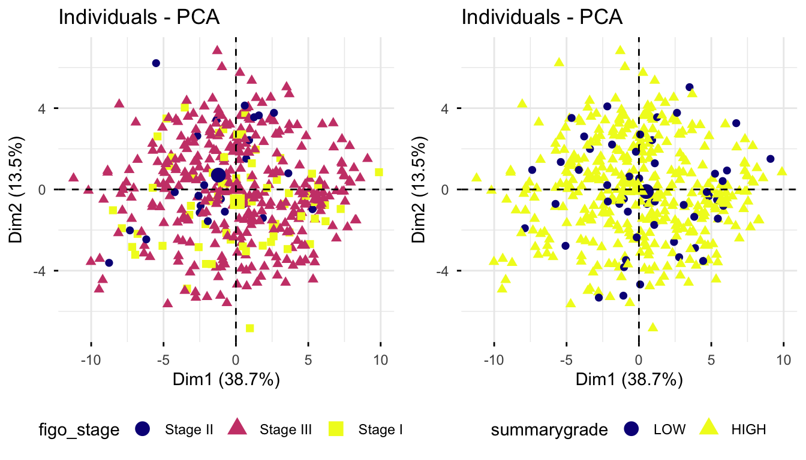
We can see that log2 helps, but rlog and VST do a better job of flattening the variance. However, rlog may overly compress high-expression values. For that reason, we will proceed using the VST-transformed data.
Expression Distribution Comparison
Let’s inspect how the transformations affect overall data spread:
# Function for boxplot
plot_box <- function(mat, title) {
df_long <- as.data.frame(mat) %>%
pivot_longer(everything(), names_to = "Sample", values_to = "Expression")
ggplot(df_long, aes(x = Sample, y = Expression, fill = Sample)) +
geom_boxplot() +
theme_minimal() +
labs(title = title) +
theme(legend.position="none",
axis.text.x = element_text(angle = 90, vjust = 0.5)) +
scale_fill_viridis_d()
}
# Generate plots
p1 <- plot_box(log2_df, "Boxplot: log2")
p2 <- plot_box(rlog_df, "Boxplot: rlog")
p3 <- plot_box(vst_df, "Boxplot: VST")
# Arrange and display plots
ggarrange(p1, p2, p3, nrow = 3)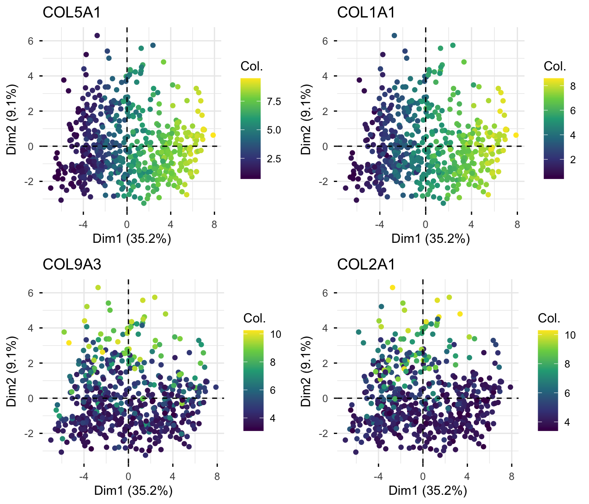
We will go with the VST!
Caution: Transformations Are Not a Cure-All
Not every issue is solvable with a transformation
Consider non-linear models or weighted least squares when appropriate
Interpret results on the transformed scale, but report findings on the original scale when possible
Best Practice: Try multiple transformations and assess both statistical fit and interpretability.
PCA on VST-Stabilized Data
Now that our gene expression data has undergone variance stabilization using the VST transformation, we’re ready to run PCA and explore structure, key contributors, and biological relevance.
# Run PCA
res.pca_genes_vst <- PCA(vst_df, graph = FALSE, scale.unit = TRUE)
fviz_screeplot(res.pca_genes_vst, addlabels = TRUE, ylim = c(0, 50))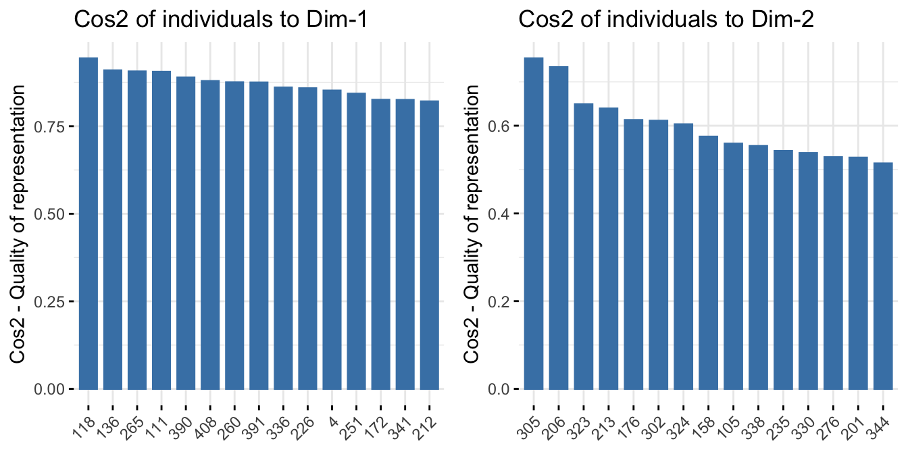
Inspect Variable Contributions
fviz_pca_var(res.pca_genes_vst, col.var = "coord",
gradient.cols = c("#00AFBB", "#E7B800", "#FC4E07"), repel = TRUE)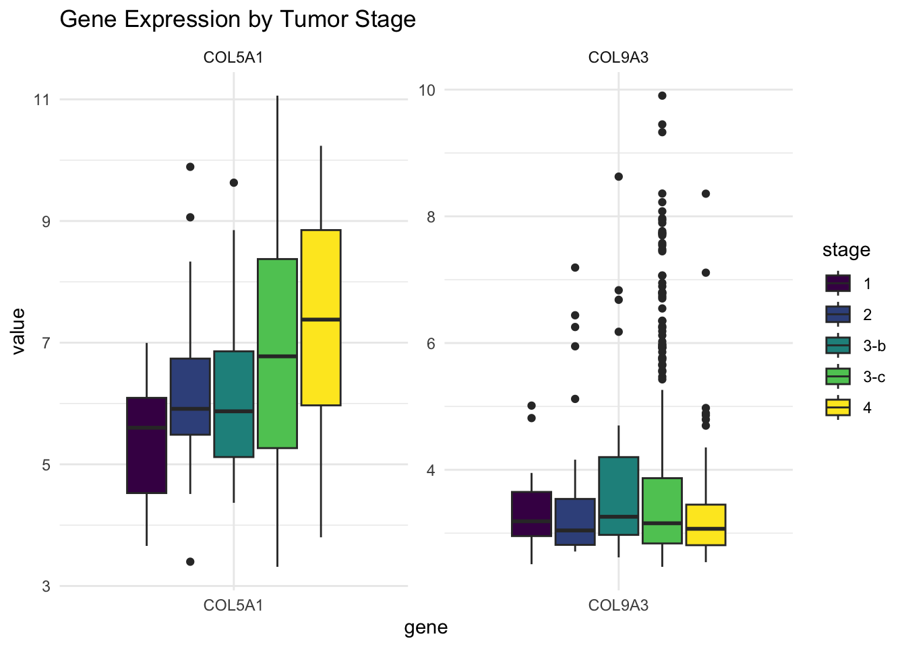
p1 <- fviz_cos2(res.pca_genes_vst, choice = "var", axes = 1, top=10) # cos2 = quality
p2 <- fviz_cos2(res.pca_genes_vst, choice = "var", axes = 2, top=10) # cos2 = quality
ggarrange(p1, p2, nrow = 1, ncol = 2)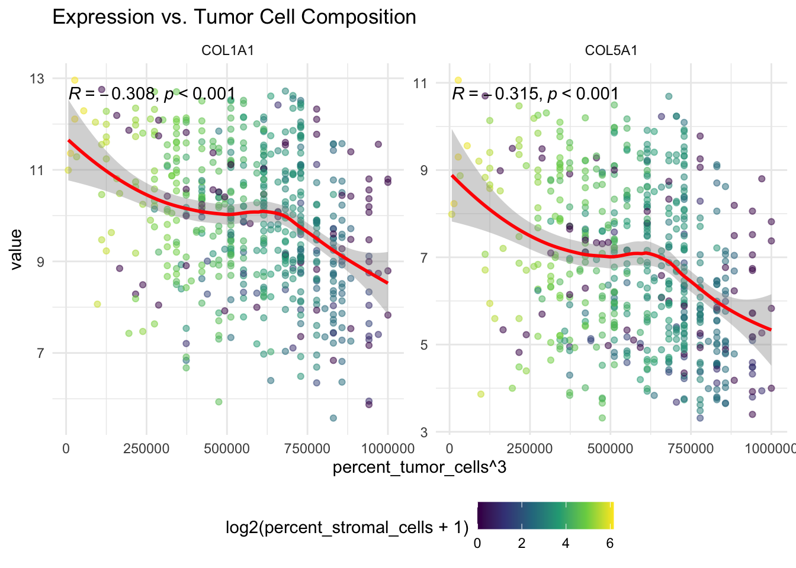
Gene Expression Patterns on PCA Projection
We can project individual samples onto PCA space and color them by expression of key genes to understand their influence and explore potential biological relevance.
p1 <- fviz_pca_ind(res.pca_genes_vst, col.ind = log2_df[,"COL5A1"], geom = "point",
title = "COL5A1") + scale_color_viridis_c()
p2 <- fviz_pca_ind(res.pca_genes_vst, col.ind = log2_df[,"COL1A1"], geom = "point",
title = "COL1A1") + scale_color_viridis_c()
p3 <- fviz_pca_ind(res.pca_genes_vst, col.ind = log2_df[,"COL9A3"], geom = "point",
title = "COL9A3") + scale_color_viridis_c()
p4 <- fviz_pca_ind(res.pca_genes_vst, col.ind = log2_df[,"COL4A6"], geom = "point",
title = "COL4A6") + scale_color_viridis_c()
ggarrange(p1, p2, p3, p4, ncol = 2, nrow = 2)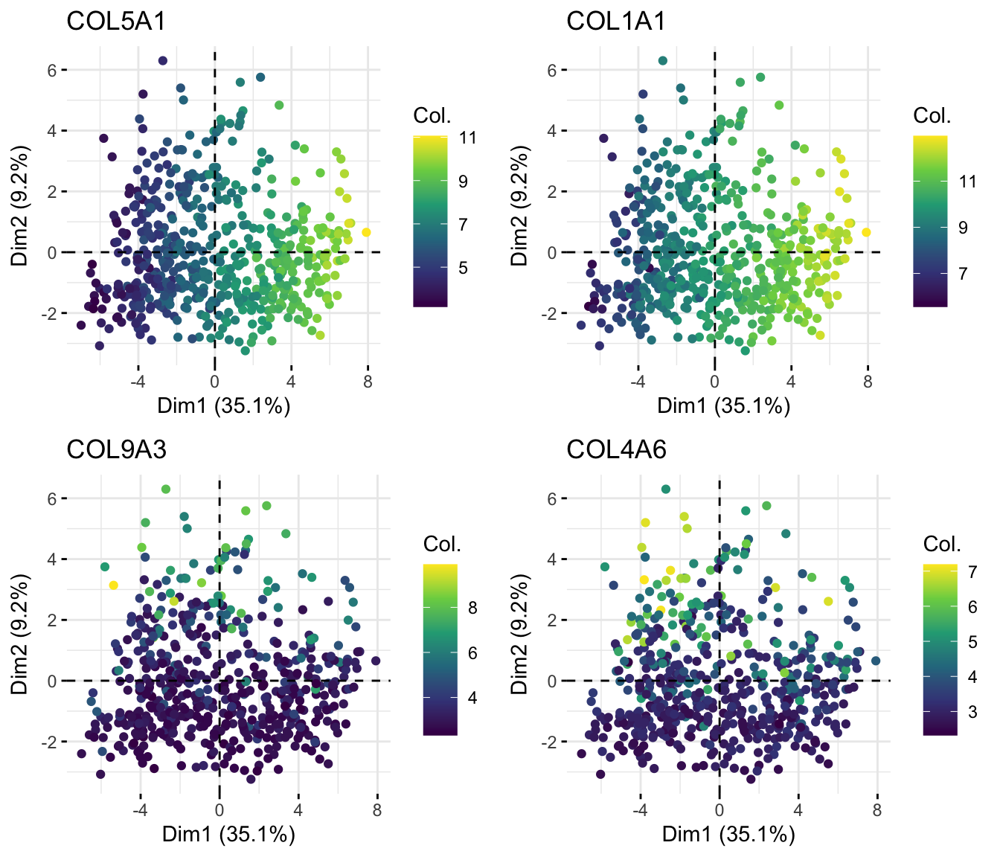
Observation: COL5A1 is a major driver of variation along PC1, while COL9A3 appears more influential along PC2.
Results: Investigating Collagen Genes and Tumor Characteristics
We set out to explore whether the COL (collagen) gene family plays an important role in ovarian cancer, and whether cell type proportions — like tumor or stromal content — influence collagen gene expression.
To explore this, we have used Principal Component Analysis (PCA) to identify the most variable and informative COL genes.
# Get variable loadings (contributions to PCs)
loadings <- res.pca_genes_vst$var$contrib
loadings_df <- as.data.frame(loadings)
loadings_df$gene <- rownames(loadings_df)
# Top genes from PC1 and PC2
top_pc1 <- loadings_df %>% arrange(desc(abs(Dim.1))) %>% slice_head(n = 2)
top_pc2 <- loadings_df %>% arrange(desc(abs(Dim.2))) %>% slice_head(n = 2)
top_genes <- unique(c(top_pc1$gene, top_pc2$gene))
top_genes[1] "COL5A1" "COL1A1" "COL9A3" "COL4A6"These top genes are the ones most strongly contributing to variation along the principal components — suggesting biological relevance.
Gene Expression by Cancer Stage
We next visualized the expression of these genes across cancer stages to see if their expression correlates with disease progression.
df_long <- df_comb %>%
select(any_of(top_genes), stage) %>%
pivot_longer(cols = starts_with('COL'),
names_to = "gene",
values_to = "value")
ggplot(df_long, aes(x = gene, y = value, fill = stage)) +
geom_boxplot() +
scale_fill_viridis_d() +
theme_minimal() +
facet_wrap(vars(gene), nrow = 2, scales = "free") +
labs(title = "Gene Expression by Tumor Stage")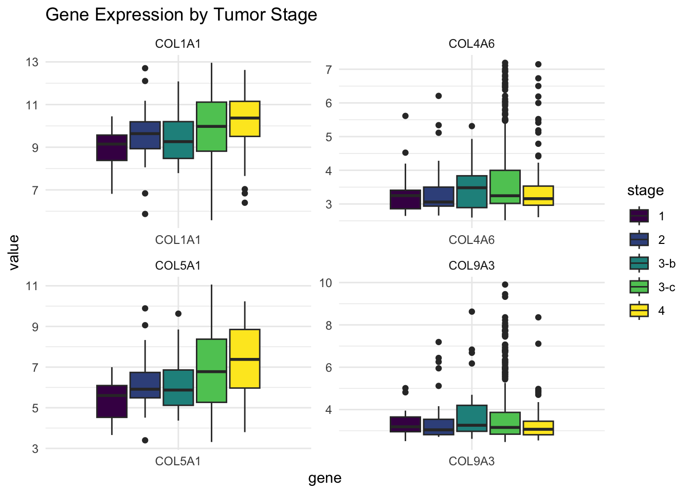
From these boxplots:
Genes highly loading on PC1 seem to increase with tumor stage, suggesting a role in tumor progression.
Genes from PC2 show a more stable or mixed pattern — possibly reflecting different biological regulation.
Gene Expression vs. Tumor Composition
We also examined how collagen gene expression loaded in PC1 relates to tumor cell percentages and stromal content — key features of the tumor microenvironment.
sel_genes <- loadings_df %>%
arrange(desc(abs(Dim.1))) %>%
slice_head(n = 2)
df_long <- df_comb %>%
select(any_of(sel_genes$gene), percent_tumor_cells, percent_stromal_cells) %>%
pivot_longer(cols = starts_with("COL"),
names_to = "gene",
values_to = "value")
ggplot(df_long, aes(x = percent_tumor_cells^3, y = value, color = percent_stromal_cells)) +
geom_point(alpha = 0.5) +
scale_color_viridis_c() +
theme_minimal() +
stat_smooth(method = "loess", col = "red") +
facet_wrap(vars(gene), ncol = 2, scales = "free") +
stat_cor(method = "pearson", p.accuracy = 0.001, r.accuracy = 0.001) +
labs(title = "Expression vs. Tumor Cell Composition") +
theme(legend.position = "bottom")`geom_smooth()` using formula = 'y ~ x'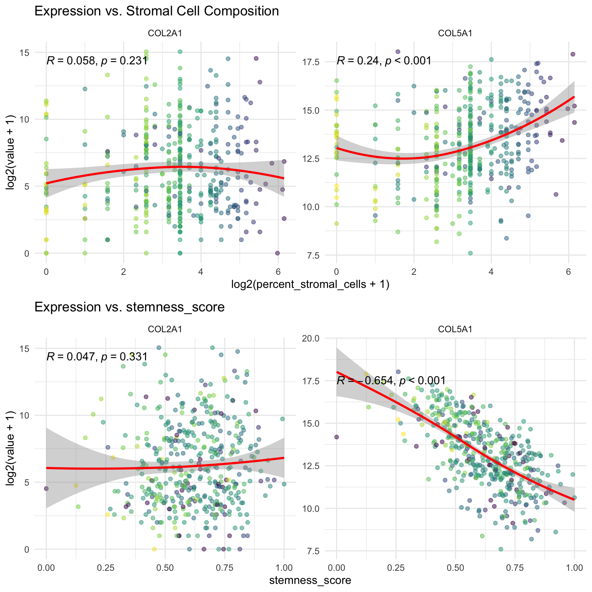
We observe a negative correlation between PC1 gene expression and tumor cell percentage, suggesting that:
Collagen expression may be higher in samples with lower tumor purity, possibly reflecting increased stromal or non-tumor activity.
This highlights the importance of adjusting for cell composition when analyzing expression data — otherwise, we risk attributing biological meaning to technical or compositional bias.
Summary of Key Results
PCA helped us prioritize COL genes most associated with biological variation.
PC1 genes showed higher expression in late-stage tumors, suggesting a role in progression.
These genes also correlate negatively with tumor cell content, implying stromal influence.
Further statistical analysis and modeling would be necessary to confirm these theories properly.